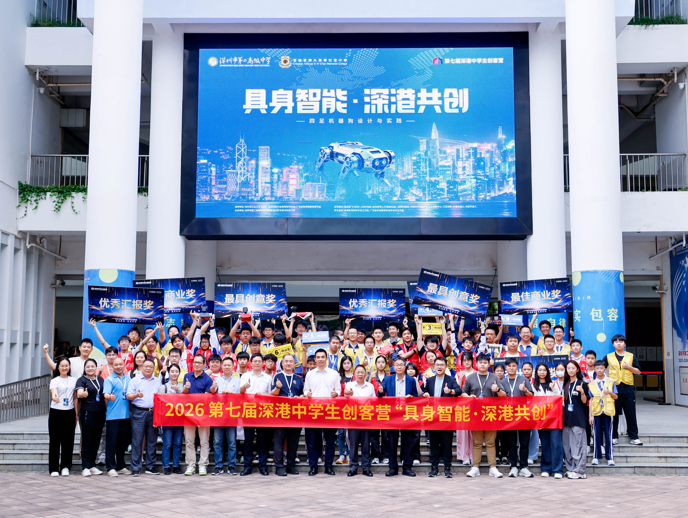
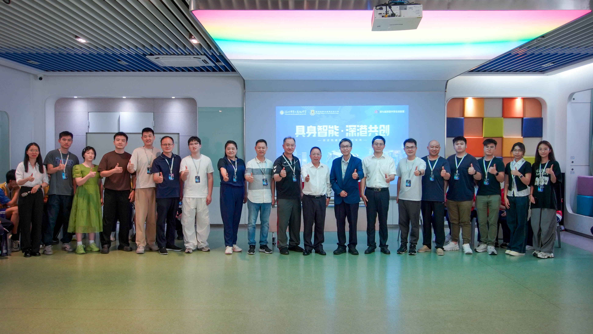
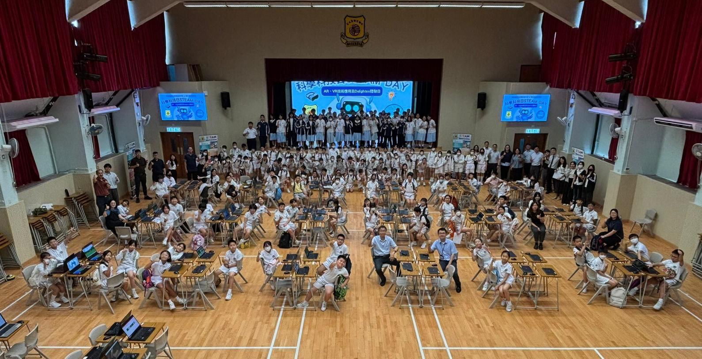
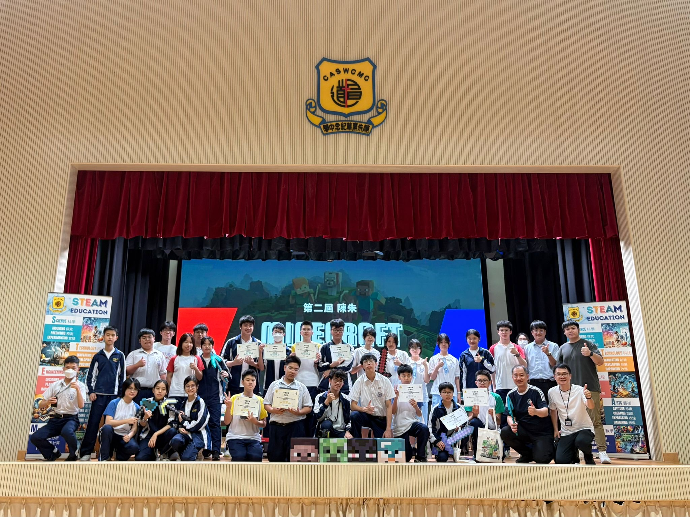

IT & Digital Education Support Intern
Christian Alliance S W Chan Memorial College
17 Mar 2026 – 31 Jul 2026 · 242 hours
Overview
During this 242-hour internship at Christian Alliance S W Chan Memorial College, I worked at the intersection of computer science and education technology. My role covered three main areas: developing and refining an AI tutoring chatbot, supporting large-scale STEAM events and outreach programmes, and providing technical mentorship for coding activities and competitions.
This internship bridged the gap between academic theory and practical application. I grew more confident in my technical capabilities — especially in AI guardrails, streaming, and hardware integration — and developed a stronger sense of leadership, crisis management, and cross-team collaboration. It clarified my aspiration to leverage technology in education and interactive media.
AI Tutoring Chatbot — Prompt Logic & Educational Guardrails
The school's computer module used an AI tutoring chatbot, but students were over-relying on it to get full Python code answers directly, which undermined independent learning and academic integrity.
I redesigned the chatbot's prompt logic and guardrails so that it would guide students step by step instead of giving away complete solutions. This involved:
- Conducting full-cycle testing of the chatbot across the computer course modules.
- Reconstructing multi-layer prompt rules and educational content guardrails.
- Restricting the system from outputting complete Python code answers; instead, making it deliver guiding questions that encourage independent reasoning.
- Applying AI tools to refine system instructions and iterative guardrail rules.
Outcome: The chatbot evolved from an answer provider into a guided learning companion, effectively eliminating students' over-reliance on direct AI solutions during coursework. This project deepened my understanding of AI ethics, educational technology, and system design under real-world constraints.
STEAM Event & Technical Operations
The school organised large-scale STEAM activities, including STEAM Week for 300+ primary and secondary students and a visit from District Council members. I supported the technical operations, hardware setup, and on-site guidance for these events.
- Configured and prepared hardware and software for AR glasses, drones, robotic dogs, iPads, and heat transfer printing.
- Took charge of the heat transfer printing station (T-shirts, stickers, teddy bears) during the District Council members' visit.
- Guided students in presenting their work to visiting guests.
- Set up OBS streaming systems for large-scale events.
Outcome: All events ran smoothly under time pressure, and students successfully showcased their STEAM projects to external guests. I gained hands-on experience in hardware integration and rapid troubleshooting during live events.
Workshop Facilitation & Outreach
The school ran outreach programmes to promote STEAM education to primary school students. My role was to teach young learners how to turn 2D designs into 3D AR interactive experiences.
- Li Chi Tak Primary School: Guided 100+ primary students to create their own customized "Butterfly Garden" — teaching them to place digital objects, write simple code to animate static images, and experience their creations through AR glasses.
- Ma Kam Ming Memorial Primary School: Set up VR glasses with pre-loaded games and web content at their campus, ensured smooth operations, and maintained order for young participants.
Outcome: Over 100 students completed their own AR creations. I strengthened my ability to break down complex technical concepts into digestible steps for young learners.
Event Logistics & Promotion
Multiple large-scale events ran in parallel — the Ming Pao Education × HKEIA GBA AI Cultural Tour, the Shenzhen–Hong Kong Maker Camp, and the Dr. STEAM Scholarship arrangements. I coordinated logistics, promotion, and communication across students, teachers, and external organisers.
- Coordinated logistics, venue setup, and promotional materials for the GBA AI Cultural Tour; designed award banners.
- Managed cross-border trip logistics and school magazine publication for the Shenzhen–Hong Kong Maker Camp.
- Standardised information collection via Google Forms, created classified group chat channels, and set up progress-tracking spreadsheets.
- Assisted Dr. STEAM Scholarship arrangements: notified students of interview schedules, prepared scoring sheets for teachers, and created group chats for communication.
Outcome: The GBA AI Cultural Tour produced 14 award winners including 3 gold prizes. My structured digital management methods greatly improved efficiency in multi-task project coordination.
Technical Support for Coding Competitions
The school ran a school-wide Minecraft competition and IT curriculum activities requiring technical and backend support. I handled competition logistics and provided Python mentorship to students.
- Managed pre-event setup, venue layout, scoring logistics, joint promotion with the Student Union, and streaming workflow handovers.
- Provided hands-on technical troubleshooting and Python programming support for students in IT curriculum activities and logic-building workshops.
Outcome: The competition ran seamlessly with smooth technical operations. I further developed my ability to manage multi-stakeholder events.
Photos



